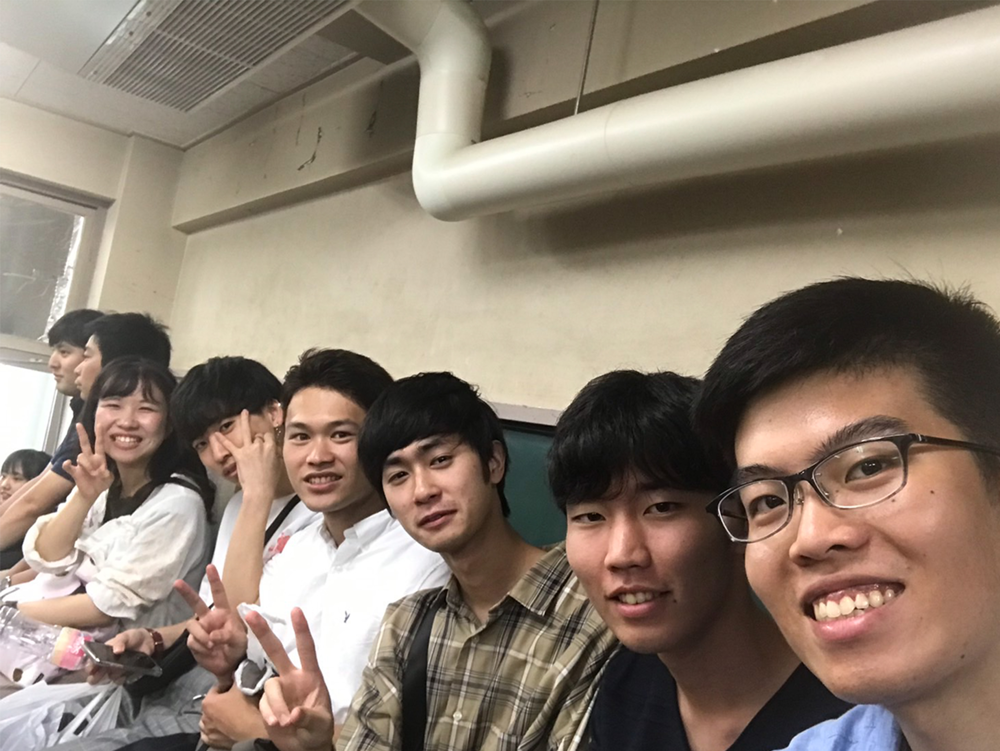
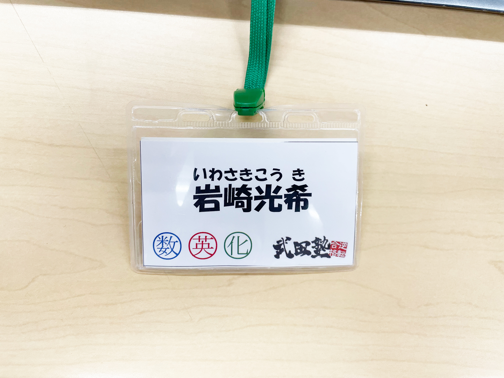

PROFILE
past students
和嶋晴香、角野しおり、行木瑠香、羽賀梓紗、
藤江優吹、
鈴木翔太、吉原理央
subject
英語、数1A2B、化学
history
木更津高校→千葉大学薬学部 高校時代は18R→22R→35Rであり、荘司さんとは3年間同じクラス それぞれのクラスでバンビと呼ばれる センター試験は脅威の88%で学年2位 受験生時代は眠眠打破を飲んでも寝ることができた
MESSAGE
中条太一
岩崎君、ご卒業おめでとうございます。 中条が赴任してからは、基本事務として色んな無茶ぶりをお願いしてきました。 いつも笑顔で対応してくださりありがとうございます！ 毎週土曜日の固定事務さんがいなくなるのは凄く寂しいですね（跡継ぎみつけておきます） 就職されても応援してます。 持ち前の愛嬌とやり遂げる力を活かして頑張ってください！ 応援してます！
荘司瑛紀
私は高校3年間と大学4年間、同じバイト先で働いていました。 そのバイト先で、私にとってとても頼りになる存在だったのが、岩崎さんです。 いつも仕事を真面目に取り組み、周りを引っ張ってくれる岩崎さんのおかげで 私も仕事に打ち込むことができました。 そして、仕事だけでなく、私の人生においても、岩崎さんからたくさんのことを学びました。 今でも岩崎さんから教わったことを思い出しては、感謝の気持ちでいっぱいになります。 本当にありがとうございました。 ChatGPTより
藤江里駆
岩崎さん 岩崎オンニはとっても優しかった ワイが大学1年の時はビラ配り一緒にやったの覚えてますか？僕はあんまり覚えてないです。たくさん配りましたね！ 受験生はもちろんのことながら、1.2年生も担当してまさに2足のわらじって感じでした！ 院生になってからは土曜の夜の男として頑張ってました。そんな岩崎オンニですが、夜ご飯はいつも家で食べるため、ご飯に誘う時は前日に誘わないといけないです。 タブレットで論文を読む姿はまさに岩崎オンニでした。 最後に卒業の祝い金として下記のURLをお届けします。 引越し代嵩みますよね、闇金や怪しいビジネスに手を出さないように お茶くらいしか飲めませんが藤江の気持ちです。 https://pay.paypay.ne.jp/GIfkK3aZQq7uT2QO
池田翔慧
岩崎さん、ご卒業おめでとうございます！ 生徒の時に、数学の偏差値32の僕が「数学を教えてください」と言っても 嫌な顔せず教えてくださったことをすごく覚えています。 あの時は本当にありがとうございました！！ また、報告書チェックの際には、鋭い質問をしていて、 勉強になることがとても多かったです。 これからもがんばってください！ありがとうございました！
在原弘大
今までありがとうございました！ 僕が塾生の頃、荘司さん、岩崎さん、寺本さん、藤江さんの 四人がいつも一緒だった記憶があります。 僕は御三方に特訓をしてもらっていたため、必然的に御三方と仲の良い 岩崎さんに尊敬の念を抱いていました。 岩崎さんのロングコートとマフラーの組み合わせはめちゃめちゃセンスがいいなと いつも惚れ惚れしながら見ていました。反則並みにセンスが良すぎでした。 長年お疲れ様でした。
植田佳和侑
卒業おめでとうございます！教務チェックなどの時に、生徒こうした方がいいよといったアドバイスを“優しく伝える“のが本当に上手いなと思っていました。そしていつも平和な雰囲気で話してくれてとても居心地がよかったです。これからも頑張ってください！応援しています。
角野しおり
ご卒業おめでとうございます！ 角野は高校1.2年次に不登校気味だったり忙しくしすぎたりしていたんですが、 それでもなんとかなって今大学に通えているのは紛れもなく岩崎先生のおかげです。 先生が担当だったから塾が私の居場所の一つになってくれました。 本当にありがとうございました、どうかお元気で！！
和嶋晴香
受験期は本当にお世話になりました！！！ 先生のおかげで数学頑張れたし、2次試験も手応えは抜群でした(^^) 0.000点という結果には表せない私の努力も 先生に褒めてもらったので報われているかなと思います。 先生が生物の面白さを話してくださったのが印象に残っています。 神戸での生活は毎日本当に楽しいです！先生のおかげです。 ありがとうございました！お元気でお過ごしください
羽賀梓紗
岩崎先生、ご卒業おめでとうございます。 私はずっと数学が苦手でしたが、先生の授業は全くつらくありませんでした。 一向に問題が解けるようにならない私に 丁寧に向き合ってくださったことにとても感謝しております。 先生のおかげで勉強を諦めずに受験し、大学に通うことができています。 本当にありがとうございました。 就職なさると伺いました。どうぞお元気でお過ごしください。
GALLERY
- 

- 